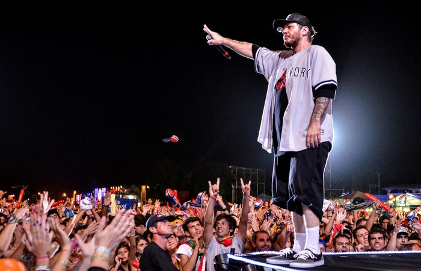
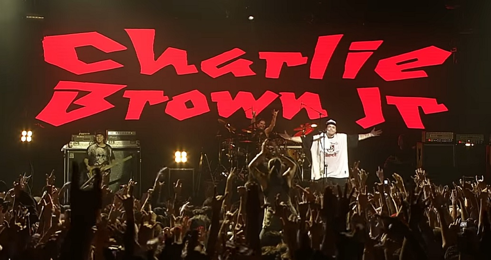

Uma banda de Rock formada em Santos - SP

Charlie Brown Jr. foi uma banda brasileira que misturava vários ritmos como o rock, reggae, rap, hardcore e skate punk. Cri ada em 1992, a banda teve seu fim com a morte do vocalista Chorão , em 06 de março de 2013. A banda Charlie Brown Jr. foi forma da em Santos, por Chorão (Alexandre Magno), Champignon, Renato Pelado, Marcão e Thiago que, ainda sem nome, começou a se apres entar na cidade e só foi batizada em 1992.
Em 2003, Charlie Brown Jr. lança o Acústico MTV, que foi marcado pelo sucesso. Em 2004 lança o sétimo álbum da carreira “Tâmo Aí Na Atividade”. Em 2005, após desentendimentos com Chorão e com a gravadora, Marcão, Renato Pelado e Champignon deixam a banda e são substituídos por Thiago Castanho (guitarra), que havia saído da banda em 2000, André Ruas (bateria) e Heitor Gomes (baixo). No mesmo ano lançam o álbum “Imunidade Musical” pela gravadora EMI. O lançamento trouxe uma mudança radical para a banda, com letras politicamente corretas, sem palavrões e com críticas mais leves. Um exemplo é a “Canção do Senhor do Tempo”. Em 2012, após desentendimentos entre Chorão e Champignon, o baixista deixa o palco, em pleno show e a briga foi divulgada no YouTube.
No dia 06 de março de 2013, Chorão foi encontrado morto em seu apartamento, em consequência de overdose de cocaína e álcool. A partir de então os outros integrantes resolveram mudar o nome da banda que passou a se chamar A Banca. No dia 09 de setembro de mesmo ano, o ex-baixista e atual vocalista, o Champignon foi encontrado morto em sua casa, com um tiro na cabeça.
. "Não tenha medo de tentar, tenha medo de não tentar e ver que a vida passou e você não se arriscou como deveria"
Charlie Brown Jr
"Fiz essa canção pra dizer algumas coisas
Cuidado com o destino
Ele brinca com as pessoas"
Charlie Brown Jr - Meu Novo Mundo
